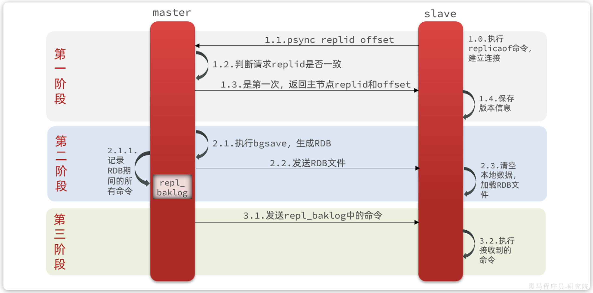
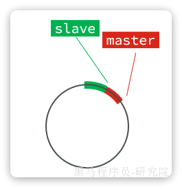
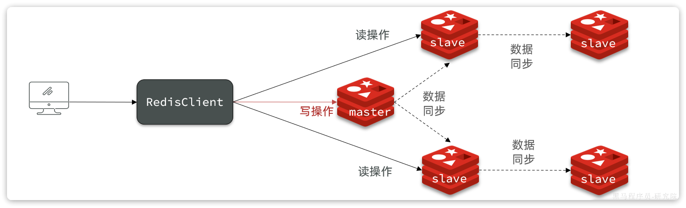
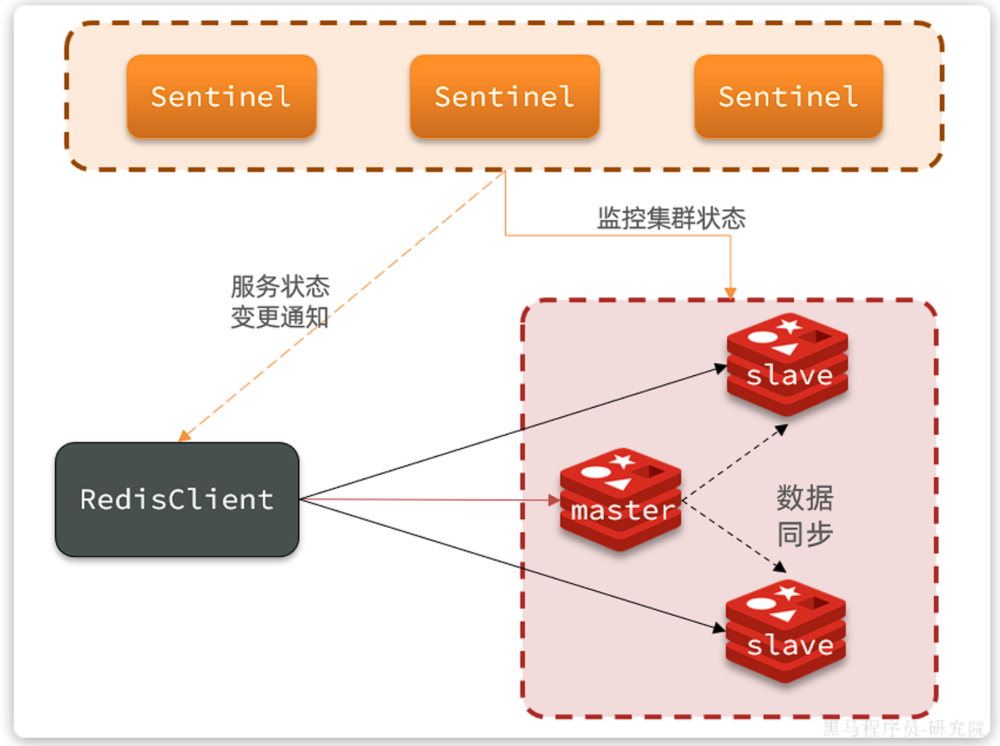
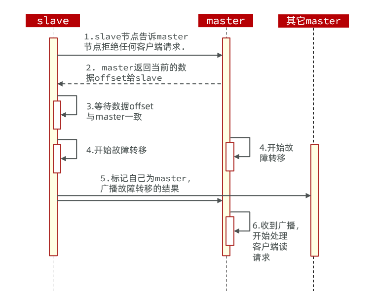

集群
Redis集群¶
单机Redis存在如下问题：
- 数据丢失问问题
- 并发不足问题
- 存储能力问题
- 故障恢复问题
对应解决方案：
- 持久化
- 主从集群
- 分片集群
- 哨兵机制
Redis持久化¶
Redis有两种持久化方案：
- RDB持久化
- AOF持久化
RDB持久化¶
RDB全称Redis Database Backup file（Redis数据备份文件），也被叫做Redis数据快照。简单来说就是把内存中的所有数据都记录到磁盘中。当Redis实例故障重启后，从磁盘读取快照文件，恢复数据。快照文件称为RDB文件，默认是保存在当前运行目录。
RDB持久化在四种情况下会执行：
- 执行save命令（会阻塞主进程）
- 执行bgsave命令（异步执行）
- Redis停机时
- 触发RDB条件时
Redis内部有触发RDB的机制，可以在redis.conf文件中找到，格式如下：
## 900秒内，如果至少有1个key被修改，则执行bgsave ， 如果是save "" 则表示禁用RDB
save 900 1
save 300 10
save 60 10000
RDB的其它配置也可以在redis.conf文件中设置：
## 是否压缩 ,建议不开启，压缩也会消耗cpu，磁盘的话不值钱
rdbcompression yes
## RDB文件名称
dbfilename dump.rdb
## 文件保存的路径目录
dir ./
bgsave开始时会fork主进程得到子进程，子进程共享主进程的内存数据。完成fork后读取内存数据并写入 RDB 文件。
fork采用的是copy-on-write技术（写时复制）：
- 当主进程执行读操作时，访问共享内存；
- 当主进程执行写操作时，则会拷贝一份数据，执行写操作。

RDB方式bgsave的基本流程？
- fork主进程得到一个子进程，共享内存空间
- 子进程读取内存数据并写入新的RDB文件
- 用新RDB文件替换旧的RDB文件
RDB会在什么时候执行？save 60 1000代表什么含义？
- 默认是服务停止时
- 代表60秒内至少执行1000次修改则触发RDB
RDB的缺点？
- RDB执行间隔时间长，两次RDB之间写入数据有丢失的风险
- fork子进程、压缩、写出RDB文件都比较耗时
AOF持久化¶
AOF全称为Append Only File（追加文件）。Redis处理的每一个写命令都会记录在AOF文件，可以看做是命令日志文件。
AOF默认是关闭的，需要修改redis.conf配置文件来开启AOF：
## 是否开启AOF功能，默认是no
appendonly yes
## AOF文件的名称
appendfilename "appendonly.aof"
AOF的命令记录的频率也可以通过redis.conf文件来配置：
## 表示每执行一次写命令，立即记录到AOF文件
appendfsync always
## 写命令执行完先放入AOF缓冲区，然后表示每隔1秒将缓冲区数据写到AOF文件，是默认方案
appendfsync everysec
## 写命令执行完先放入AOF缓冲区，由操作系统决定何时将缓冲区内容写回磁盘
appendfsync no
对比：
| 配置项 | 存盘机制 | 优点 | 缺点 |
|---|---|---|---|
| Always | 同步 | 可靠性高 | 性能影响大 |
| everysec | 每秒 | 性能适中 | 可能丢失1秒数据 |
| no | 操作系统控制 | 性能最好 | 可靠性差 |
AOF文件重写
因为是记录命令，AOF文件会比RDB文件大的多。而且AOF会记录对同一个key的多次写操作，但只有最后一次写操作才有意义。通过执行bgrewriteaof命令，可以让AOF文件执行重写功能，用最少的命令达到相同效果。
Redis也会在触发阈值时自动去重写AOF文件。阈值也可以在redis.conf中配置：
## AOF文件比上次文件 增长超过多少百分比则触发重写
auto-aof-rewrite-percentage 100
## AOF文件体积最小多大以上才触发重写
auto-aof-rewrite-min-size 64mb
对比
| RDB | AOF | |
|---|---|---|
| 持久化方式 | 定时做内存快照 | 记录写命令 |
| 数据完整性 | 不完整，未备份的数据丢失 | 相对完整，取决于存盘策略 |
| 文件大小 | 有压缩机制，体积小 | 记录命令，体积大 |
| 宕机恢复速度 | 很快 | 慢 |
| 数据恢复优先级 | 低 | 高（因为完整性更高） |
| 系统资源占用 | 高，大量CPU和内存消耗 | 低，主要占用磁盘IO（文件重写时占用CPU和内存） |
| 使用场景 | 可以容忍部分数据丢失 | 对数据完整性要求高 |
主从集群¶
单节点Redis的并发能力是有上限的，要进一步提高Redis的并发能力，就需要搭建主从集群，实现读写分离。
简单架构图：

如图所示，集群中有一个master节点、两个slave节点（现已改为replica）。当我们通过Redis的Java客户端访问主从集群时，应该做好路由：
- 如果是写操作，应该访问master节点，master会自动将数据同步给两个slave节点
- 如果是读操作，建议访问各个slave节点，从而分担并发压力
使用docker compose启动多个Redis实例：
version: "3.2"
services:
r1:
image: redis
container_name: r1
network_mode: "host"
entrypoint: ["redis-server", "--port", "7001"]
r2:
image: redis
container_name: r2
network_mode: "host"
entrypoint: ["redis-server", "--port", "7002"]
r3:
image: redis
container_name: r3
network_mode: "host"
entrypoint: ["redis-server", "--port", "7003"]
需要通过命令来配置主从关系：
## 使用redis-cli连接到slave节点
## Redis5.0以前
slaveof <masterip> <masterport>
## Redis5.0以后
replicaof <masterip> <masterport>
有临时和永久两种模式：
- 永久生效：在redis.conf文件中利用
slaveof命令指定master节点 - 临时生效：直接利用redis-cli控制台输入
slaveof命令，指定master节点
全量同步¶
主从第一次建立连接时，会执行全量同步，将master节点的所有数据都拷贝给slave节点

master如何判断salve是否是第一次来同步？
Replication Id：简称replid，是数据集的标记，replid一致则是同一数据集。每个master都有唯一的replid，slave则会继承master节点的replidoffset：偏移量，随着记录在repl_baklog中的数据增多而逐渐增大。slave完成同步时也会记录当前同步的offset。如果slave的offset小于master的offset，说明slave数据落后于master，需要更新。
Note
master判断一个节点是否是第一次同步的依据，就是看replid是否一致
增量同步¶
全量同步需要先做RDB，然后将RDB文件通过网络传输个slave，成本太高了。 因此除了第一次做全量同步，其它大多数时候slave与master都是做增量同步

主要由repl_baklog文件实现。这个文件是一个固定大小的数组，只不过数组是环形，也就是说角标到达数组末尾后，会再次从0开始读写，这样数组头部的数据就会被覆盖。
repl_baklog中会记录Redis处理过的命令及offset，包括master当前的offset，和slave已经拷贝到的offset：

slave与master的offset之间的差异，就是slave需要增量拷贝的数据了。
如果slave出现网络阻塞，导致master的offset远远超过了slave的offset，当master的offset覆盖了slave未同步的offset,如果slave恢复，需要同步，却发现自己的offset都没有了，无法完成增量同步了。只能做全量同步。
主从同步优化¶
-
在master中配置
repl-diskless-sync yes启用无磁盘复制，避免全量同步时的磁盘IO。 -
Redis单节点上的内存占用不要太大，减少RDB导致的过多磁盘IO
-
适当提高
repl_baklog的大小，发现slave宕机时尽快实现故障恢复，尽可能避免全量同步 -
限制一个master上的slave节点数量，如果实在是太多slave，则可以采用
主-从-从链式结构，减少master压力
主-从-从架构图：

哨兵模式¶
Redis提供了哨兵（Sentinel）机制来监控主从集群监控状态，确保集群的高可用性。

哨兵的作用如下：
- 状态监控：
Sentinel会不断检查master和slave是否按预期工作 - 故障恢复（failover）：如果
master故障，Sentinel会将一个slave提升为master。当故障实例恢复后会成为slave - 状态通知：
Sentinel充当Redis客户端的服务发现来源，当集群发生failover时，会将最新集群信息推送给Redis的客户端
Sentinel基于心跳机制监测服务状态，每隔1秒向集群的每个节点发送ping命令，并通过实例的响应结果来做出判断：
- 主观下线（sdown）：如果某sentinel节点发现某Redis节点未在规定时间响应，则认为该节点主观下线。
- 客观下线(odown)：若超过指定数量（通过
quorum设置）的sentinel都认为该节点主观下线，则该节点客观下线。quorum值最好超过Sentinel节点数量的一半，Sentinel节点数量至少3台。
一旦发现master故障，sentinel需要在salve中选择一个作为新的master，选择依据是这样的：
- 首先会判断slave节点与master节点断开时间长短，如果超过
down-after-milliseconds * 10则会排除该slave节点 - 然后判断slave节点的
slave-priority值，越小优先级越高，如果是0则永不参与选举（默认都是1）。 - 如果
slave-prority一样，则判断slave节点的offset值，越大说明数据越新，优先级越高 - 最后是判断slave节点的
run_id大小，越小优先级越高（通过info server可以查看run_id）。
搭建哨兵集群¶
sentinel.conf文件
sentinel announce-ip "localhost"
sentinel monitor hmaster localhost 7001 2
sentinel down-after-milliseconds hmaster 5000
sentinel failover-timeout hmaster 60000
sentinel announce-ip "localhost"：声明当前sentinel的ipsentinel monitor hmaster localhost 7001 2：指定集群的主节点信息hmaster：主节点名称，自定义，任意写localhost 7001：主节点的ip和端口2：认定master下线时的quorum值
sentinel down-after-milliseconds hmaster 5000：声明master节点超时多久后被标记下线sentinel failover-timeout hmaster 60000：在第一次故障转移失败后多久再次重试
docker-compose.yaml
version: "3.2"
services:
r1:
image: redis
container_name: r1
network_mode: "host"
entrypoint: ["redis-server", "--port", "7001"]
r2:
image: redis
container_name: r2
network_mode: "host"
entrypoint: ["redis-server", "--port", "7002", "--slaveof", "localhost", "7001"]
r3:
image: redis
container_name: r3
network_mode: "host"
entrypoint: ["redis-server", "--port", "7003", "--slaveof", "localhost", "7001"]
s1:
image: redis
container_name: s1
volumes:
- /root/redis/s1:/etc/redis
network_mode: "host"
entrypoint: ["redis-sentinel", "/etc/redis/sentinel.conf", "--port", "27001"]
s2:
image: redis
container_name: s2
volumes:
- /root/redis/s2:/etc/redis
network_mode: "host"
entrypoint: ["redis-sentinel", "/etc/redis/sentinel.conf", "--port", "27002"]
s3:
image: redis
container_name: s3
volumes:
- /root/redis/s3:/etc/redis
network_mode: "host"
entrypoint: ["redis-sentinel", "/etc/redis/sentinel.conf", "--port", "27003"]
RedisTemplate连接哨兵¶
1.引入redis依赖
2.配置application.yaml
spring:
redis:
sentinel:
master: mymaster # 主节点名称
nodes: # 哨兵集群地址
- 192.168.150.101:7001
- 192.168.150.101:7002
- 192.168.150.101:7003
通过以上配置后就可以通过哨兵找到主从节点
3.配置读写分离
@Bean
public LettuceClientConfigurationBuilderCustomizer clientConfigurationBuilderCustomizer(){
return clientConfigurationBuilder -> clientConfigurationBuilder.readFrom(ReadFrom.REPLICA_PREFERRED);
}
Note
这个bean中配置的就是读写策略，包括四种：
MASTER：从主节点读取MASTER_PREFERRED：优先从master节点读取，master不可用才读取replicaREPLICA：从slave（replica）节点读取REPLICA _PREFERRED：优先从slave（replica）节点读取，所有的slave都不可用才读取master
分片集群¶
主从模式可以解决高可用、高并发读的问题。但依然有两个问题没有解决：
- 海量数据存储
- 高并发写
要解决这两个问题就需要用到分片集群了。分片的意思，就是把数据拆分存储到不同节点，这样整个集群的存储数据量就更大了。
Redis分片集群的结构如图：

特征：
- 集群中有多个master，每个master保存不同分片数据 ，解决海量数据存储问题
- 每个master都可以有多个slave节点 ，确保高可用
- master之间通过ping监测彼此健康状态 ，类似哨兵作用
- 客户端请求可以访问集群任意节点，最终都会被转发到数据所在节点
搭建分片集群¶
分片集群中的Redis节点必须开启集群模式，一般在配置文件中添加下面参数：
port 7000
cluster-enabled yes
cluster-config-file nodes.conf
cluster-node-timeout 5000
appendonly yes
cluster-enabled：是否开启集群模式cluster-config-file：集群模式的配置文件名称，无需手动创建，由集群自动维护cluster-node-timeout：集群中节点之间心跳超时时间
docker-compose.yaml部署节点
version: "3.2"
services:
r1:
image: redis
container_name: r1
network_mode: "host"
entrypoint: ["redis-server", "--port", "7001", "--cluster-enabled", "yes", "--cluster-config-file", "node.conf"]
r2:
image: redis
container_name: r2
network_mode: "host"
entrypoint: ["redis-server", "--port", "7002", "--cluster-enabled", "yes", "--cluster-config-file", "node.conf"]
r3:
image: redis
container_name: r3
network_mode: "host"
entrypoint: ["redis-server", "--port", "7003", "--cluster-enabled", "yes", "--cluster-config-file", "node.conf"]
r4:
image: redis
container_name: r4
network_mode: "host"
entrypoint: ["redis-server", "--port", "7004", "--cluster-enabled", "yes", "--cluster-config-file", "node.conf"]
r5:
image: redis
container_name: r5
network_mode: "host"
entrypoint: ["redis-server", "--port", "7005", "--cluster-enabled", "yes", "--cluster-config-file", "node.conf"]
r6:
image: redis
container_name: r6
network_mode: "host"
entrypoint: ["redis-server", "--port", "7006", "--cluster-enabled", "yes", "--cluster-config-file", "node.conf"]
Warning
使用Docker部署Redis集群，network模式必须采用host
创建集群
## 进入任意节点容器
docker exec -it r1 bash
## 然后，执行命令
redis-cli --cluster create --cluster-replicas 1 \
192.168.150.101:7001 192.168.150.101:7002 192.168.150.101:7003 \
192.168.150.101:7004 192.168.150.101:7005 192.168.150.101:7006
redis-cli --cluster：代表集群操作命令create：代表是创建集群--cluster-replicas 1：指定集群中每个master的副本(slave)个数为1- 此时
节点总数 ÷ (replicas + 1)得到的就是master的数量n。因此节点列表中的前n个节点就是master，其它节点都是slave节点，随机分配到不同master
我们可以通过命令查看集群状态：
redis-cli -p 7001 cluster nodes
散列插槽¶
据要分片存储到不同的Redis节点，肯定需要有分片的依据，这样下次查询的时候才能知道去哪个节点查询。很多数据分片都会采用一致性hash算法。而Redis则是利用散列插槽（hash slot）的方式实现数据分片。
在Redis集群中，共有16384个hash slots，集群中的每一个master节点都会分配一定数量的hash slots。具体的分配在集群创建时就已经指定了
当我们读写数据时，Redis基于CRC16 算法对key做hash运算，得到的结果与16384取余，就计算出了这个key的slot值。然后到slot所在的Redis节点执行读写操作。
Note
hash slot的计算也分两种情况：
- 当
key中包含{}时，根据{}之间的字符串计算hash slot - 当
key中不包含{}时，则根据整个key字符串计算hash slot
连接集群时，要加-c参数：
## 通过7001连接集群
redis-cli -c -p 7001
## 存入数据
set user jack
如何将同一类数据固定的保存在同一个Redis实例？
- Redis计算key的插槽值时会判断key中是否包含
{}，如果有则基于{}内的字符计算插槽 - 数据的key中可以加入
{类型}，例如key都以{typeId}为前缀，这样同类型数据计算的插槽一定相同
集群伸缩¶
redis-cli --cluster提供了很多操作集群的命令，可以通过命令redis-cli --cluster help
例：添加节点redis-cli --cluster add-node new_host:new_port existing_host:existing_port
Note
默认作为主节点，参数--cluster-slave和--cluster-master-id <arg>指定为从节点
新节点默认无插槽，需要分配，可以从其他节点转移插槽 redis-cli --cluster reshard host:port
故障转移¶
分片集群默认存在自动故障转移，有节点宕机会自动主从切换
手动故障转移
利用cluster failover命令可以手动让集群中的某个master宕机，切换到执行cluster failover命令的这个slave节点，实现无感知的数据迁移。

这种failover命令可以指定三种模式：
- 缺省：默认的流程，如图1~6歩
- force：省略了对offset的一致性校验
- takeover：直接执行第5歩，忽略数据一致性、忽略master状态和其它master的意见
RedisTemplate连接分片集群¶
-
引入Redis依赖
-
配置分片集群地址（仅该步骤于哨兵模式有区别）
spring: redis: cluster: nodes: - 192.168.150.101:7001 - 192.168.150.101:7002 - 192.168.150.101:7003 - 192.168.150.101:8001 - 192.168.150.101:8002 - 192.168.150.101:8003 -
配置读写分离